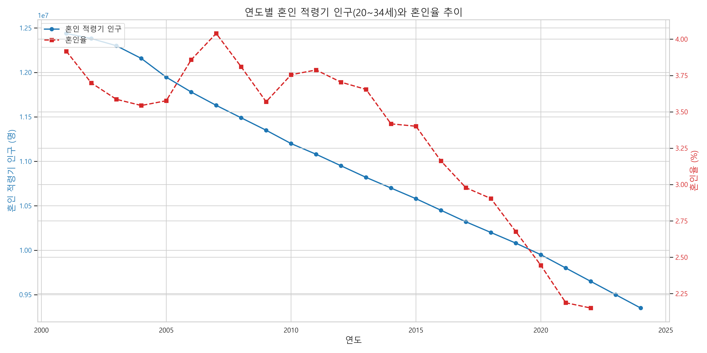

{% extends "main.html" %}
{% block content %}
분석 결과 시각화
이번 분석은 지방 인구 감소 현상에서 출발했다.
순이동율 비교 그래프를 통해 보면,
2015년 이후 비수도권 지역의 순이동율은 급격한 하락세를 보이며,
지방 청년층 이탈과 지역 인구 유출이 심화되고 있음을 확인할 수 있다.
수도권과밀화
가설 :수도권으로의 인구 유입이 지방 인구 감소를 가속화한다
.png)
가설 :대도시의 자연증가율 보다 소도시의 자연증가율이 낮을것이다.

 또한 자연 증가율 비교에 따르면,
수도권과 광역시에 비해 지방 소도시의 인구 감소 폭이 훨씬 더 크며,
이미 다수의 소도시에서는 자연 증가율이 마이너스 상태에 도달했다.
또한 자연 증가율 비교에 따르면,
수도권과 광역시에 비해 지방 소도시의 인구 감소 폭이 훨씬 더 크며,
이미 다수의 소도시에서는 자연 증가율이 마이너스 상태에 도달했다.
가설 :지방의 낮은 혼인율이 인구 감소를 가속화한다.

 하지만 출산율과 혼인율 그래프에서는
수도권과 비수도권, 대도시와 소도시 모두가 같은 흐름으로 감소하고 있으며,
낙폭에는 차이가 있지만 감소 방향은 전국적으로 일관되게 나타나고 있다.
하지만 출산율과 혼인율 그래프에서는
수도권과 비수도권, 대도시와 소도시 모두가 같은 흐름으로 감소하고 있으며,
낙폭에는 차이가 있지만 감소 방향은 전국적으로 일관되게 나타나고 있다.
결론 : 다시 말해, 지방 공동화는 저출산의 주된 원인이라기보다,
인구 구조 붕괴를 더 빠르게 가속화시키는 지역적 촉매제이며,
저출산 문제 자체는 전국이 함께 겪고 있는 구조적 인구 위기라고 할 수 있다.
이후 분석에서는 저출산 현상의 원인을 구조적으로 이해하기 위해
다음과 같은 네 가지 가설을 검증했다.
저출산
가설1 :결혼율 감소가 출산율 하락의 주요 원인일것이다.

 결혼율과 출산율은 같은 비율로 함께 하락하고 있으며,약 49.8%의 상관관계가 확인되었다.
결혼율과 출산율은 같은 비율로 함께 하락하고 있으며,약 49.8%의 상관관계가 확인되었다.
이는 결혼율 감소가 출산율 감소로 이어지는 구조적 연결 고리로 작용하고 있음을 의미한다.
가설2 :개인소득의 증가는 자연증가율을 증가시킬 것이다.
 1인당 개인소득이 약 16,000 이상인 시점부터 출산율이 회복되는 경향이 나타났다.
1인당 개인소득이 약 16,000 이상인 시점부터 출산율이 회복되는 경향이 나타났다.
이는 단순한 지원이 아닌, 출산이 가능한 경제적 안정 수준이 중요하다는 점을 시사한다.
가설3 :수도권의 높은 생활비가 출산 기피로 이어진다

 수도권과 비수도권 모두 유사한 물가 상승과 출산율 하락을 보여,
지역 간 생활비 격차가 출산율 저하의 결정적 원인은 아님이 드러났다.
수도권과 비수도권 모두 유사한 물가 상승과 출산율 하락을 보여,
지역 간 생활비 격차가 출산율 저하의 결정적 원인은 아님이 드러났다.
가설4 :20~30대의 높은 실업률이 결혼율 감소에 주요 원인일 것이다


 20대 여성 실업률과 혼인율 간 일부 음의 상관관계가 있었지만, 전체적으로 명확한 인과관계는 없었고
20대 여성 실업률과 혼인율 간 일부 음의 상관관계가 있었지만, 전체적으로 명확한 인과관계는 없었고
30대 남성의 경우에도 일시적 패턴에 불과했다.

가장 구조적인 문제는 혼인 자체가 가능한 인구가 줄어들고 있다는 사실이다.
20~34세 인구는 2001년 약 1,240만 명에서 2024년 약 935만 명으로 급감했고,
이는 과거 출산율 하락이 현재의 혼인 가능 인구 감소로 이어진 구조적 결과다.
이러한 흐름은 단순한 개인의 선택이 아닌, 인구구조적 악순환의 연속이며,
결혼율과 출산율이 함께 감소하는 것은 이미 예견된 수순이었다.
{% endblock %}